Аудит текущего сайта детейлинг-центра «Левша» с точки зрения премиального сегмента и обоснование разработки нового сайта.
Между уровнем сервиса компании и тем, как она представлена в интернете, есть заметный разрыв. Для премиальной аудитории сайт — это первое касание с брендом: именно он формирует ожидание качества услуги и уровня компании.
Технический SEO-аудит показывает, что корень проблемы не в текстах и не в отдельных ошибках, а в архитектуре сайта. Поэтому точечные доработки — временное решение, и рациональный вариант — разработка нового сайта.
Компания оказывает премиальную услугу, а в интернете выглядит как типовой сервис.
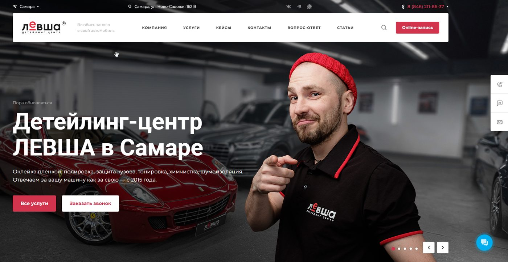
Заходя на сайт, клиент должен сразу понимать, что перед ним премиальный детейлинг. Это ощущение формируется в первые 3 секунды — визуальной подачей и смыслами.
Визуал. Качественные фотографии дорогих автомобилей, современный минималистичный дизайн, сдержанная цветовая палитра, внимание к деталям. Каждый элемент должен транслировать уровень сервиса.
Текст. Уже на первом экране он должен отвечать на вопрос: «Почему именно вам стоит доверить автомобиль стоимостью несколько миллионов?» Сейчас первый экран такого впечатления не формирует.
Клиенты этого сегмента покупают не только услугу детейлинга. Они покупают уровень сервиса, доверие и статус. Сейчас сайт визуально неотличим от десятков обычных сервисов и не создаёт ощущения премиальности.
Тон воспринимается как слишком неформальный — мастер в шапке показывает пальцем на потенциального клиента. Это не создаёт ощущения высокого уровня сервиса, надёжности и внимания к деталям.
Считываться должен статус: клиент должен понять, что здесь его обслужат на 5+ и вернут автомобиль в целости и сохранности.
«Если компания не инвестирует в собственный имидж, почему я должен доверить ей автомобиль стоимостью несколько миллионов?»
На сайте много услуг: оклейка, полировка, химчистка, шумоизоляция, ремонт вмятин и так далее. Но клиент не покупает «полировку». Он покупает своё состояние — спокойствие за автомобиль, который доверил нам.
Он хочет:
Продажи этих смыслов на сайте практически нет.
Первое — название услуги.
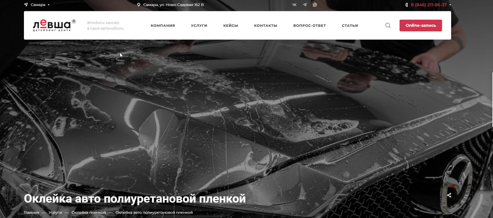
Второе — фотогалерея. Это хорошо: по сути, это социальное доказательство.
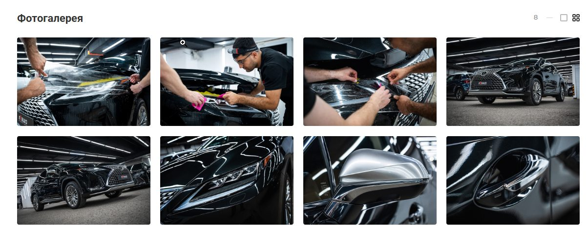
И на этом всё. Дальше идёт сплошной SEO-текст, который никто не будет читать.
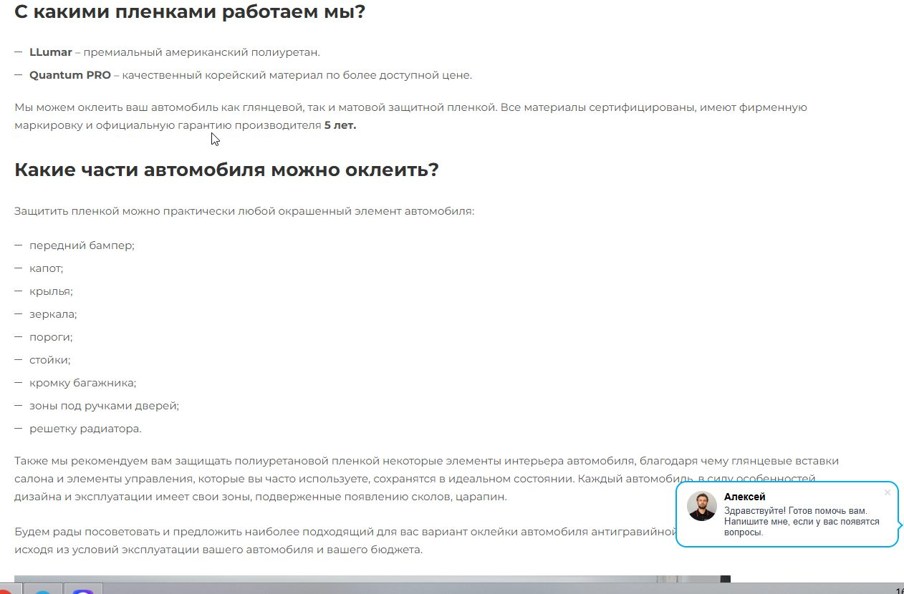
Преимущества написаны сплошным текстом, шаблонными формулировками и находятся внизу страницы, куда почти никто не доходит.
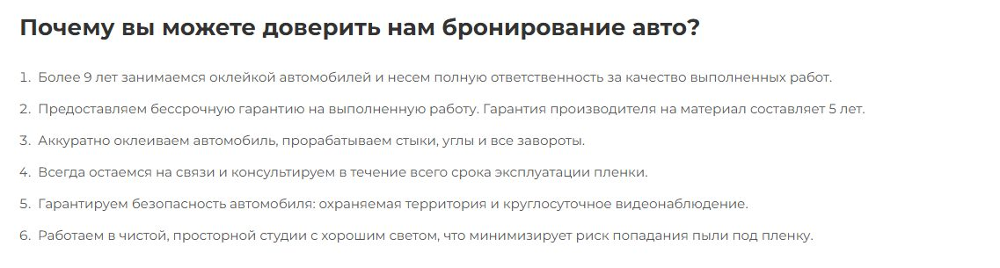
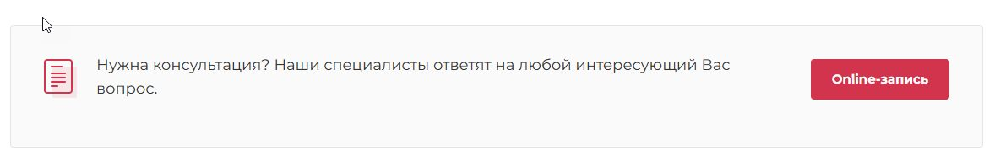
На странице должно быть понятно, зачем идти к нам и почему мы сильны в этой услуге, а каждые 2–3 блока — разные формы захвата контакта.
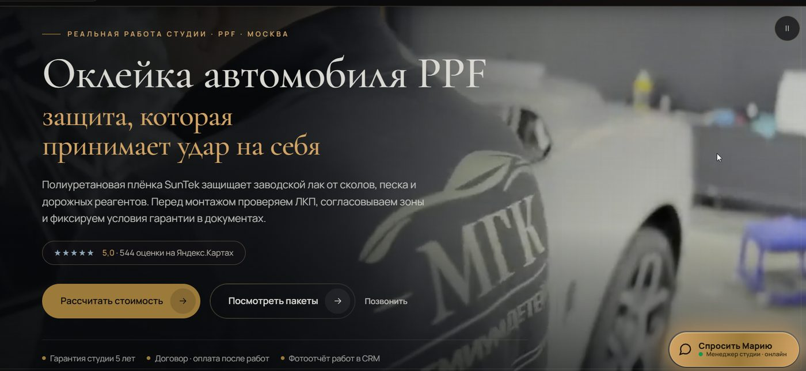
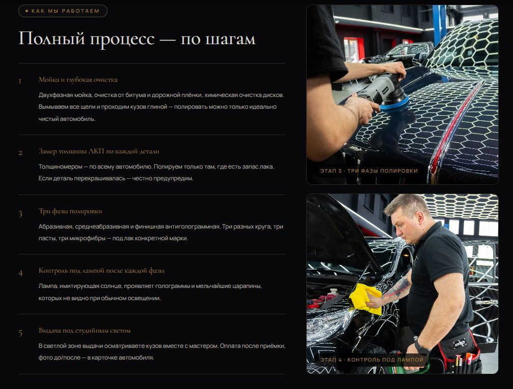
Сервис и отношение к клиенту должны считываться во всём: в удобной зоне ожидания, в чае или кофе, в возможности посмотреть телевизор, в работающем Wi-Fi.
Из этих, казалось бы, мелочей складывается образ детейлинга. Именно после такого отношения клиент приезжает снова и советует нас другу — и всё это нужно транслировать на сайте. Ещё один аргумент в пользу того, чтобы обратиться именно к нам.
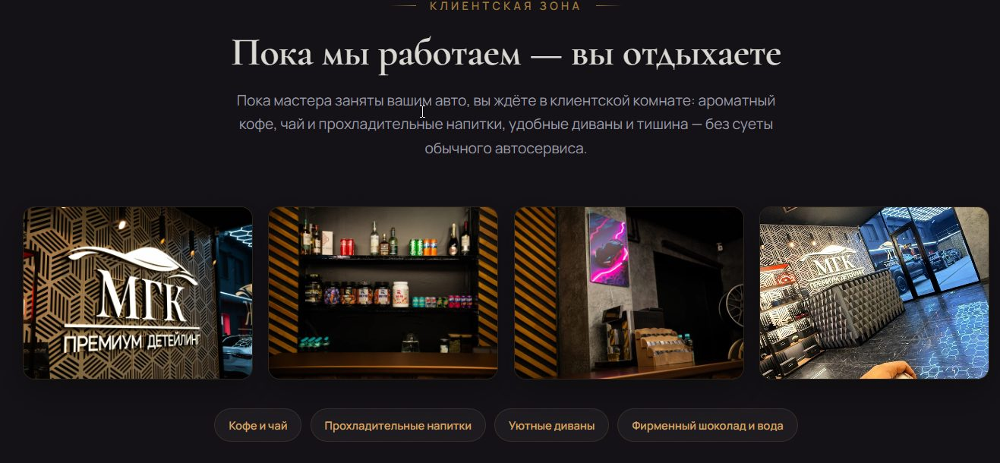
Компания работает с 2015 года, имеет историю, несколько направлений и большое количество проектов. На сайте это выглядит как обычный перечень информации.
Не сформулировано:
Без позиционирования начинается конкуренция по цене. Позиционирование нужно построить и транслировать так, чтобы оно продавало само.
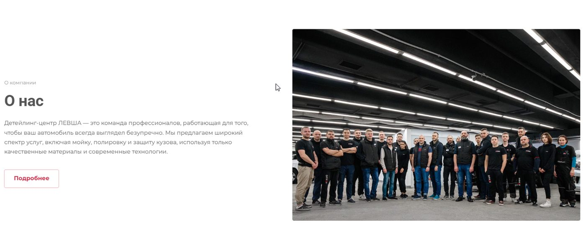
Клиенты доверяют нам самое дорогое — свой автомобиль. Значит, доверие должно быть обосновано на сайте: цифрами, лицом, ответственностью за результат.
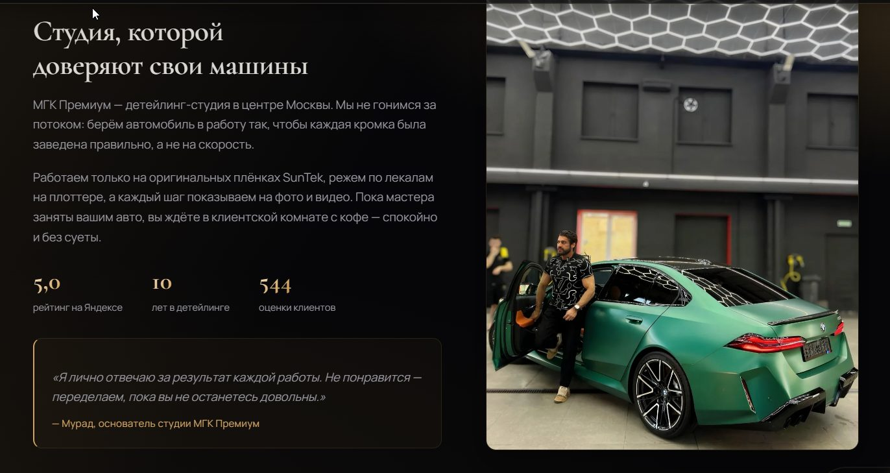
В премиальном сегменте решение принимается не только логикой. Важно вызвать ощущение:
Длинные простыни текста никто читать не будет: текст нужно разложить на читаемые блоки, а SEO-текст опустить в самый низ страницы.
Поводов оставить заявку почти нет: на страницах практически отсутствуют CTA — формы обратной связи, побуждающие к конкретному действию: «Рассчитать стоимость», «Записаться на полировку» и подобные.
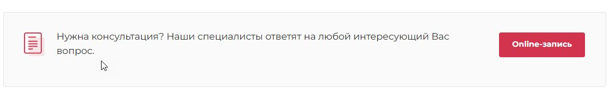
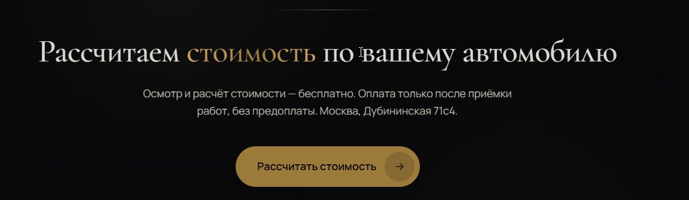
Сейчас сайт продаёт услуги детейлинга. Премиальный сайт должен продавать доверие, статус, качество сервиса и уверенность, что автомобиль окажется в руках лучших специалистов.
Премиальный сайт продаёт эмоцию владельца, который садится в свой автомобиль после детейлинга и снова испытывает те же ощущения, что и в день покупки. Именно за это клиенты премиум-сегмента готовы платить больше.
Это подтверждают и общие рекомендации по сайтам для детейлинг-центров: акцент должен быть на ощущении качества, доверии, визуальной подаче, кейсах и экспертности, а не только на перечне услуг.
Дополнительно проведён технический SEO-аудит сайта levsha-group.ru.
Полная версия аудита: disk.yandex.ru/i/WvqqD_TcgbKoQA
По итогам анализа основная проблема сайта — не отдельные ошибки, тексты или страницы, а сама архитектура проекта.
Из-за этого любые точечные доработки будут временным решением: они потребуют постоянных переделок, увеличат стоимость SEO-продвижения и всё равно не позволят раскрыть потенциал органического трафика.
Рациональное решение — разработка нового сайта. Это позволит сразу заложить правильную структуру, подготовить сайт к масштабированию и дальнейшему SEO-продвижению и увеличить количество целевых обращений без регулярных переделок готовых разделов.
Это структура будущей страницы, разработанная на основе анализа поисковой выдачи. На этом этапе изучаются конкуренты из топа Яндекса и Google: структура их страниц, состав блоков, способы подачи информации. На основании анализа формируется перечень элементов, которые должны быть на странице, чтобы поисковые системы считали её максимально релевантной запросам.
Именно на этом этапе определяется:
Поэтому SEO-прототип создаётся до дизайна и разработки — он формирует фундамент продвижения.
Примеры:
После SEO-прототипа разрабатывается маркетинговый — детальный чёрно-белый макет будущего сайта, в котором уже учтены требования SEO и одновременно проработана логика продаж.
На этом этапе определяется:
В результате дизайн создаётся не «для красоты», а на основе готовой стратегии продвижения и продаж.
Пример: маркетинговый прототип в Moqups